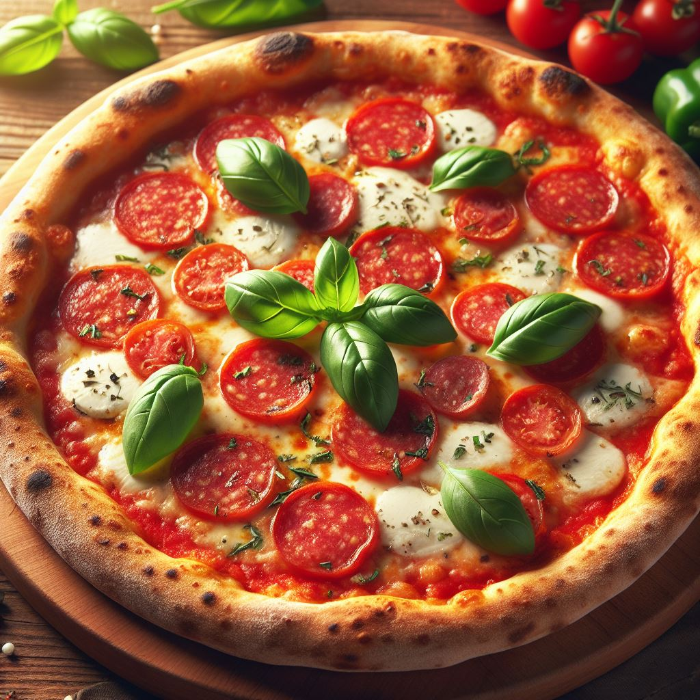

To make pizza, start by preparing the dough by combining flour, yeast, salt, water, and olive oil in a mixing bowl. Knead the dough until it's smooth, then let it rise in a warm place for about an hour. Once risen, roll out the dough into a round shape and place it on a pizza pan or baking sheet. Spread tomato sauce over the dough, then add toppings like cheese, pepperoni, vegetables, or whatever you prefer. Bake the pizza in a preheated oven at a high temperature (usually around 475°F or 240°C) for about 12-15 minutes, or until the crust is golden brown and the cheese is bubbly and melted. Remove from the oven, slice, and enjoy your homemade pizza!
